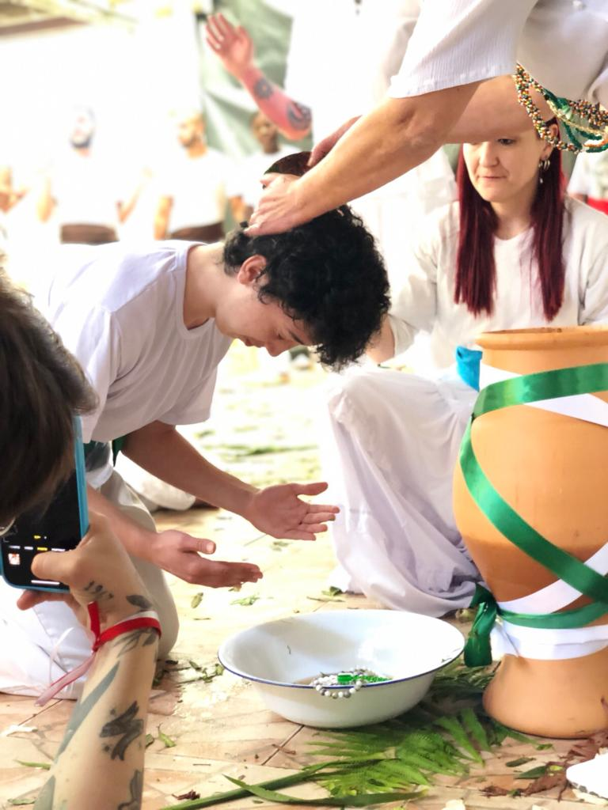
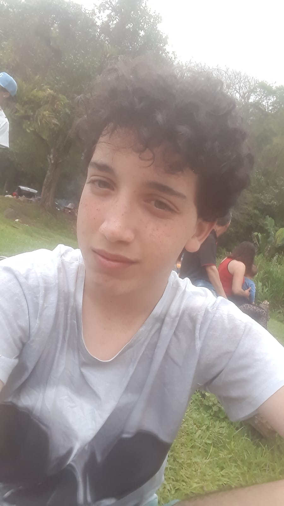
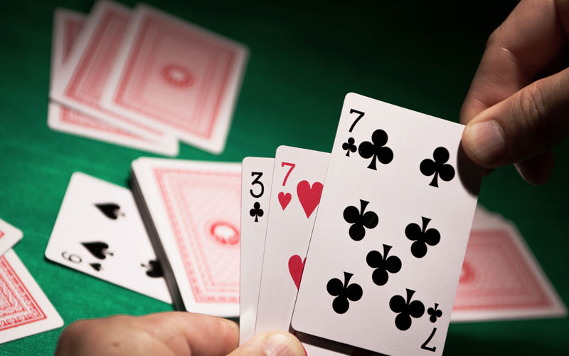

Olá, me chamo Milton e vim contar sobre alguns hobbies meus para vocês terem um conhecimento da minha vida.
Abaixo vocês veram alguns deles.
A Umbanda é uma relião afro-brasileira que teve como seu fundador Zelio de Morais com a direçaõ do Caboclo das Sete Encruzilhadas.
Hoje existe várias vertentes da Umbanda, sendo a que eu sigo denominada como Umbanda Pé no Chão, também conhecida como Umbanbda de Fachinha.
Com isso dito um dos meus maiores hobbies é conhecer mais sobre a Umbanda e frequenta-lá, levando comigo e dividindo com meus irmãos esse conhecimento.
Outro hobbies que eu tenho é de fazer passeio como o que eu vou mostrar a seguir, esse foi em um domingo lá em Morretes.
Um dos hobbies mais fofos que eu tenho é a de escrever cartas e textos.
Porém esse hobbies eu faço com menos frequência, pois preciso de uma motivação como fazer O Meu Anjo sorrir.
Esse também é um dos meus hobbies que mais pratico.
Eu jogo muito Truco e Pife. O Truco é muito mais no colégio, mesmo sendo proibido jogar aí.
